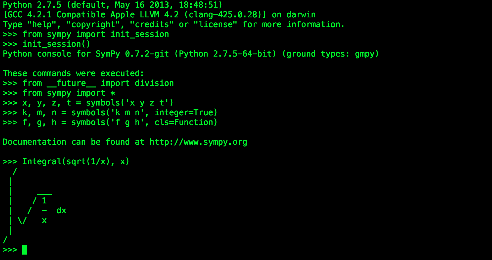

Printing¶
As we have already seen, SymPy can pretty print its output using Unicode characters. This is a short introduction to the most common printing options available in SymPy.
Printers¶
There are several printers available in SymPy. The most common ones are
- str
- repr
- ASCII pretty printer
- Unicode pretty printer
- LaTeX
- MathML
- Graphviz
In addition to these, there are also “printers” that can output SymPy objects to code, such as C, Fortran, Javascript, Theano, and Python. These are not discussed in this tutorial.
Setting up Pretty Printing¶
If all you want is the best pretty printing, use the init_printing function. This will automatically enable the best printer available in your environment.
>>> from sympy import init_printing
>>> init_printing()
If you plan to work in an interactive calculator-type session, the init_session function will automatically import everything in SymPy, create some common Symbols, setup plotting, and run init_printing.
>>> from sympy import init_session >>> init_session()Python console for SymPy 0.7.2-git (Python 2.7.5-64-bit) (ground types: gmpy) These commands were executed: >>> from __future__ import division >>> from sympy import * >>> x, y, z, t = symbols('x y z t') >>> k, m, n = symbols('k m n', integer=True) >>> f, g, h = symbols('f g h', cls=Function) Documentation can be found at http://www.sympy.org>>>
In any case, this is what will happen:
In the IPython QTConsole, if \(\LaTeX\) is installed, it will enable a printer that uses \(\LaTeX\).

If \(\LaTeX\) is not installed, but Matplotlib is installed, it will use the Matplotlib rendering engine. If Matplotlib is not installed, it uses the Unicode pretty printer.
In the IPython notebook, it will use MathJax to render \(\LaTeX\).

In an IPython console session, or a regular Python session, it will use the Unicode pretty printer if the terminal supports Unicode.

In a terminal that does not support Unicode, the ASCII pretty printer is used.
